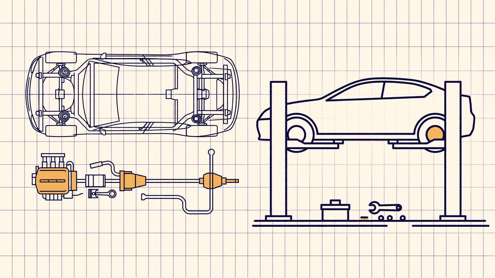
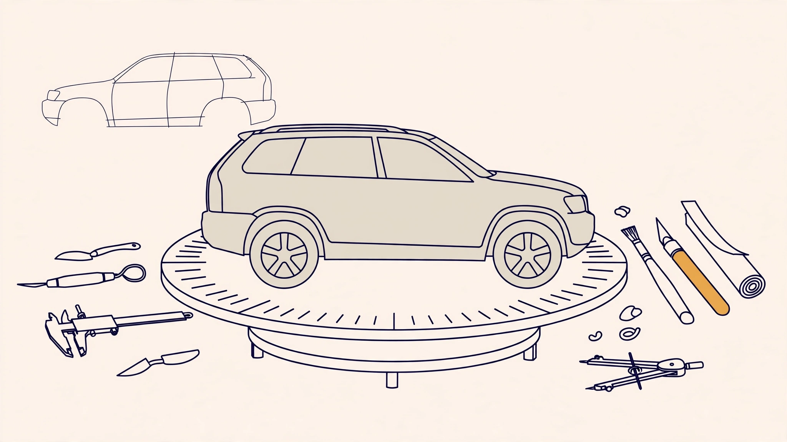
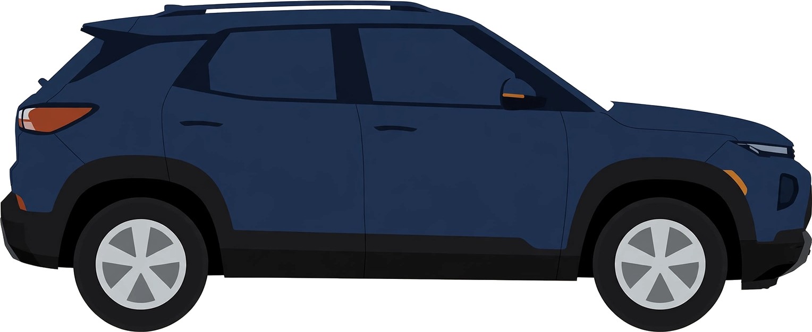
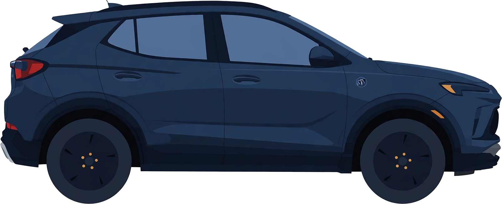
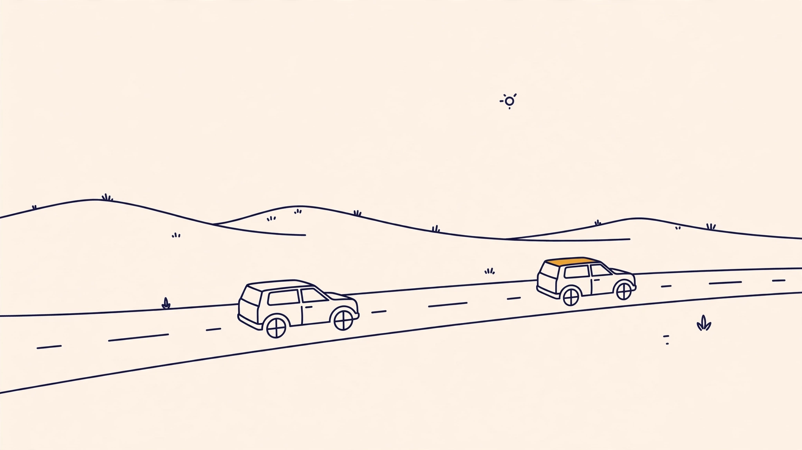
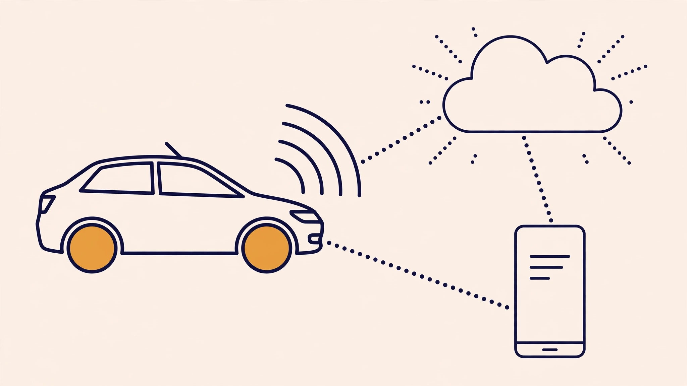
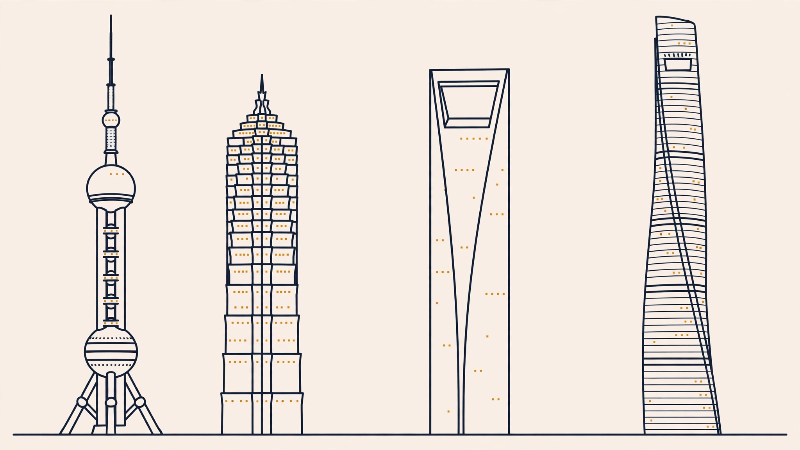
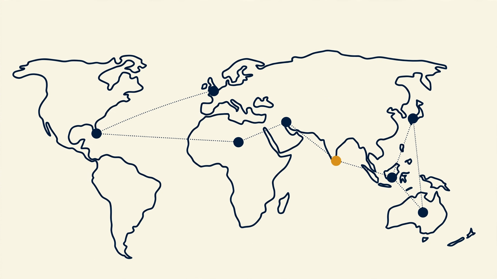
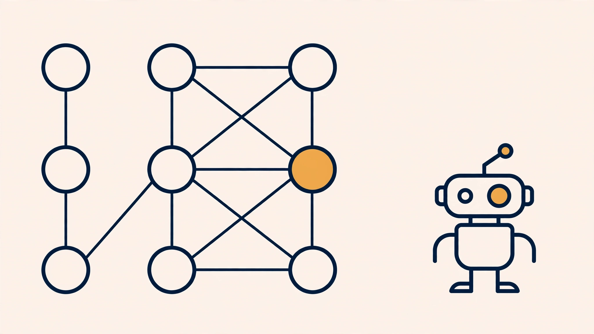

THE
ROAD.
One career, one road. Scroll and drive it — from an engineering floor in 2003, through Detroit and Shanghai, to building AI today.
ENGINEERING
Eleven years on the engineering side — powertrain, interiors, and vehicle systems — before moving to product marketing. The foundation everything after it is built on.

EQUINOX
Led the Equinox globally — vehicle product marketing, customer experience, and dealer business development in Mexico — with project and travel assignments across five countries.

TRAILBLAZER
& ENCORE GX
Two nameplates, one segment. The Chevrolet Trailblazer and Buick Encore GX — launched together, and both still on the road today.



CONNECTED
& OTA
The turn from vehicles to software. Strategy for connected services and over-the-air updates — the work that led to Shanghai.

SHANGHAI
Three years in Shanghai. Built the software & digital business — about 2,650 people across five departments — and my China ADAS market research and pitch supported GM's approval of $167M for L2++ ADAS development.

ONSTAR
INTERNATIONAL
Aligned OnStar US, Middle East and Mexico, vehicle brands and three Chinese JVs to deliver OnStar on China-sourced export vehicles across eight regions.

AI BUILDER
GM killed the original app in 2019 — it cost about $3M a year to run. I rebuilt it myself, more capable by my estimate, for about $10–15k in Copilot credits plus my time. Now I build AI tools, and I'm looking for the next director role.

LET'S TALK
ABOUT
WHAT'S NEXT.
marcin.fracz@gmail.com
Detroit · Shanghai · Everywhere the road goes. Built with AI, in the flat matte style of Ferdio.